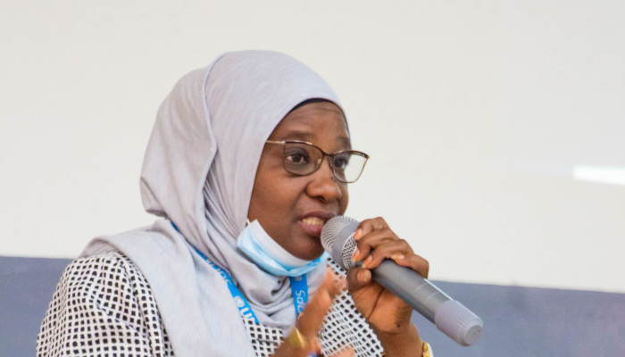
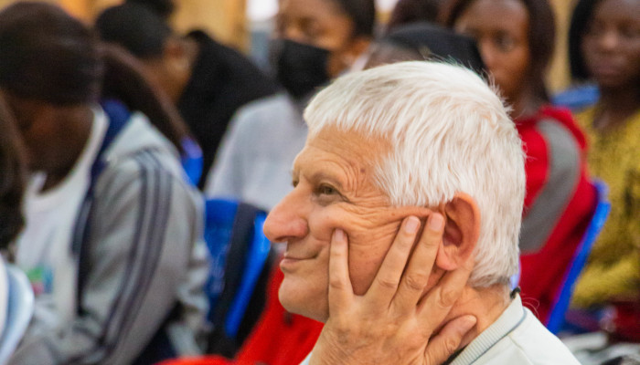
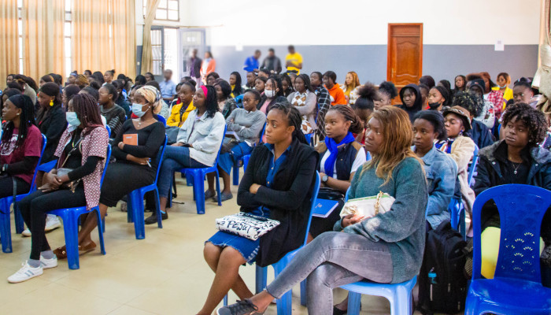
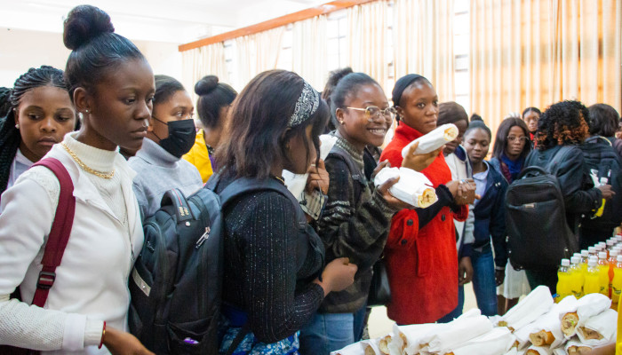

CONFÉRENCE DE L’UNOPS À ESIS
Publié le 11/07/2022 (Jabulani !D)

Ce mercredi 6 juillet 2022, Esis a reçu une délégation de l’UNOPS, venue
tenir une conférence sur les opportunités de stage et d’emploi y offertes.

La
délégation était conduite par Madame Ndèye Oulimata NDIONGUE, du bureau de liaison de Kinshasa.

Le Père Jean-Luc VAN KERKHOVE, Directeur Général de Esis, a tenu à rehausser de sa présence cet
évènement.

Cette conférence a ciblé essentiellement les
étudiantes de Esis, car d’une part l’une des missions de l’ONU est d’atteindre l’égalité des genres
dans le monde professionnel, et d’autre par l’UNOPS a constaté une quasi absence de candidatures
féminines provenant de Lubumbashi.
Il était question de montrer aux étudiantes que la
possibilité de candidater à l’UNOPS pour un stage ou un poste national ou international était tout à
fait à leur portée.
La conférence a eu deux temps forts : le premier était la
présentation de l’UNOPS, de sa structure, ses statistiques, ses réalisations, les conditions de
travail en termes de salaire et de niveaux de sécurité ; et le deuxième, qui consistait à encourager
les étudiantes à postuler, comme stagiaires ou comme professionnelles, et à leur montrer comment
remplir des candidatures valides.
Madame Oulimata a rassuré les étudiantes de Esis
qu’elles n’avaient pas besoin de connaître un agent de l’UNOPS pour appuyer leur candidature, car
l’UNOPS étant une institution de l’ONU, et l’ONU prônant l’intégrité, seul leur compétence serait la
clé dans le processus de recrutement.

La
conférence a été conclue par un rafraîchissement offert aux participants.
Notons que
l’UNOPS, The United Nations Office for Project Services, et en français Bureau de Nations unies pour
les services d’appui aux projets, a été créé depuis 1973 comme une entité dépendant du PNUD, le
Programme des Nations Unies pour le Développement. L’UNOPS est devenu un organisme indépendant et
autofinancé. Son siège est situé à Copenhague au Danemark, et l’UNOPS est actuellement dirigé par Mr
Jens Wandel.
Les domaines d’expertise de l’UNOPS sont les infrastructures, la gestion des
projets, les achats, les ressources humaines et la gestion financière.
| N° | Titre | Date pub. |
|---|---|---|
| 1 | PROGRAMME DE LA JOURNEE SCIENTIFIQUE | 25/08/2022 |
| 2 | CONFÉRENCE DE L’UNOPS À ESIS | 11/07/2022 |
| 3 | CONSTRUCTION PREMIER NIVEAU BLOC A | 11/07/2022 |
| 4 | FÊTE DE MARIE AUXILIATRICE | 03/06/2022 |
| 5 | DIPLOMES | 27/05/2022 |